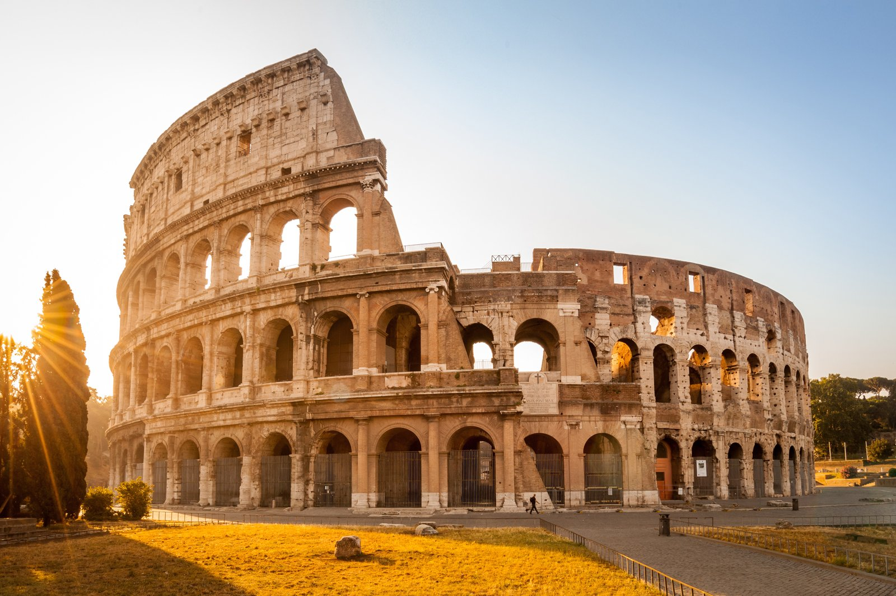
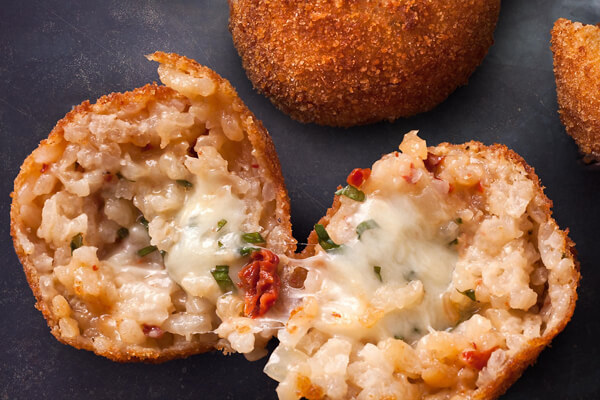

이탈리아의 관광지
로마(Roma)
로마는 이탈리아의 수도이자 최대의 도시로 테베레 강 연안에 위치하고 있다.
로마에는 유명한 관광지들이 많은데 서기 80년에 지어진 콜로세움은 로마 제국 최대 규모의 원형 극장인 콜로세움과 바티칸 시티에서 가장 눈에 띄는 건축물로 전 세계 기독교인들 사이에서
가장 성스러운 곳으로 여겨지는 곳인 성 베드로 대성당과 도시 중앙의 트레비 광장에 있는 로마에서 가장 큰 바로크 양식의 인공 분수인 트레비 분수가 있다.
이탈리아에는 로마 외에도 피렌체, 베네치아, 밀라노, 피사등 많은 관광지가 있어 여행을 가보는 것을 추천한다.
콜로세움
 성 베드로 대성당
성 베드로 대성당
 트레비 분수
트레비 분수
이탈리아의 음식
이탈리아의 대표적인 음식은 고기, 토마토, 모짜렐라, 각종 퍼섯, 피스타치오 등을 골프공 크기로 만들어 빵가루를 묻혀 튀겨내는 요리인 아란치니(Arancini)와
넓고 납작한 판 형태의 파스타인 라자냐(Lasagne)와 송아지의 뒷다리 정강이 부위에 화이트 와인을 붓고 푹 고아 낸 일종의 찜 요리인 오소 부코(Osso buco)등이 있다.
아란치니
라자냐
 오소 부코
오소 부코
메인으로 돌아가기